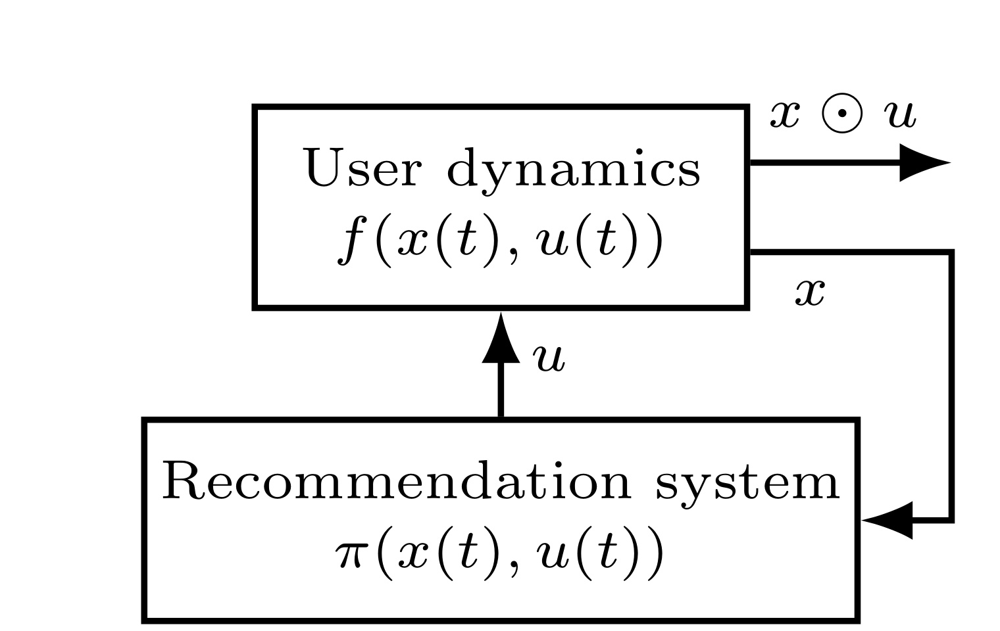
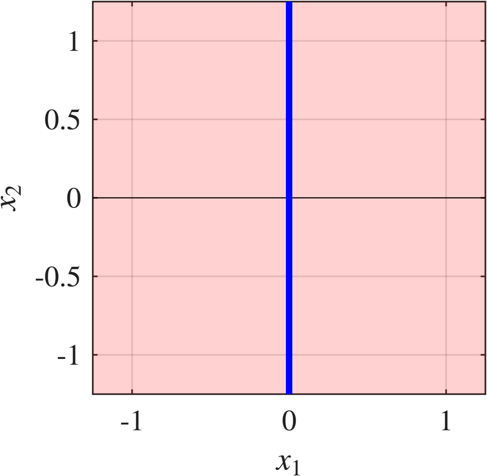
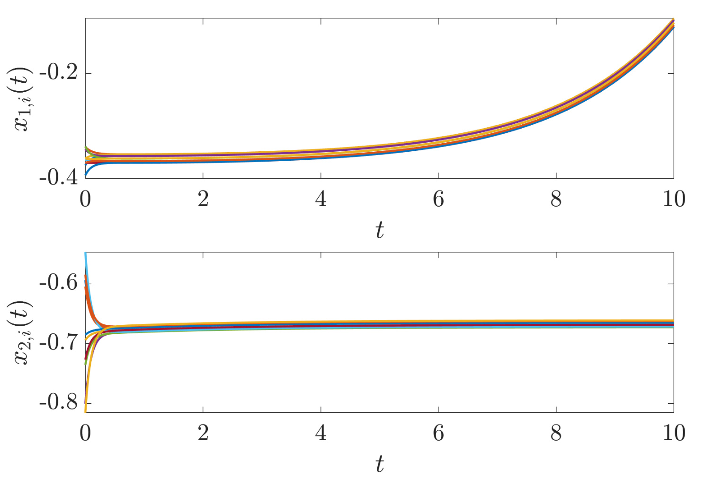

Pathological Regimes of Closed-Loop Recommendation Systems over Social Networks
这篇论文来自 Univ. Grenoble Alpes、CNRS、Inria、Grenoble INP、GIPSA-lab 与 Sciences Po Grenoble-UGA 相关作者，作者为 Mariano Simone 和 Paolo Frasca。论文入口是 arXiv:2607.05010，arXiv 摘要页没有给出独立代码仓库；从正文看，这是一篇以控制理论分析为主的推荐系统理论论文，核心贡献不是提出一个可直接上线的排序模型，而是把社交网络上的推荐闭环写成无限时域状态反馈最优控制问题，并刻画什么样的目标权重会让这个闭环进入病态区域。
当推荐系统为了短期 engagement 奖励不断改变用户意见和曝光环境时，推荐输入不再只是预测结果，而是会反过来塑造用户状态；如果 engagement 权重、极化惩罚、基线保持、推荐 mismatch、曝光正则和控制代价之间的谱条件不成立，同一个最优控制目标可能出现不稳定自由模、有限但不可达到的下确界，或仿射反馈合成失败。
1. 背景和问题
推荐系统常被工程化地理解为召回、排序、重排和反馈学习的组合：平台观察用户行为，模型预测点击、停留、购买或互动概率，再把高分内容推给用户。这个视角在离线评估和短期在线指标中很自然，却容易隐藏一个更长期的问题：推荐不是对静态偏好的被动读取，而是对未来偏好、意见、社交关系和内容生态的主动干预。论文开篇把社交媒体与电商平台放在同一个闭环里看，因为两者都存在类似机制：用户状态影响推荐，推荐改变用户接触到的观点或商品，新的行为日志又被用来训练下一轮推荐。只要这个反馈环节存在，优化 engagement 就可能同时优化出偏见放大、极端意见漂移、内容同质化和曝光多样性下降。
已有关于 filter bubble、algorithmic confounding、反馈回路和政治极化的工作说明，推荐系统的坏行为不一定来自某个单独模型错误。更棘手的情况是，模型在自己的局部目标上是“最优”的：它确实找到了更能引发互动的内容，也确实依据历史日志更新了用户画像，但这些日志已经被上一轮推荐污染，用户状态也已经被上一轮曝光推到新的区域。论文因此不把问题表述为“如何修正一个有偏数据集”，而是问一个更基础的问题：如果我们承认推荐系统本身就是一个动态控制器，那么什么样的目标函数才会生成一个数学上良定、行为上可解释的闭环？
这篇论文的重要性在于，它没有停留在“推荐系统应该考虑长期影响”的原则层面，而是把这种长期影响写成了连续时间、多用户、多话题的意见动力学。用户之间的社交影响由图 Laplacian 表示，话题之间的逻辑依赖由 topic-coupling 矩阵表示，每个用户保留内在信念的倾向由 anchoring 项表示，推荐系统提供的输入则直接作用在用户对每个话题的外显意见上。这样一来，推荐问题被重写为：平台应该选择什么样的输入 u，使意见状态 x 在无限时域内既能保持 engagement，又不走向极化、过度偏离未受控基线、过大控制强度或邻居之间曝光差异过高。
论文真正关注的不是一个经验数据集上的指标提升，而是这个控制问题什么时候会变质。直觉上，我们会以为只要目标函数里放入足够多的“好项”，例如极化惩罚、控制努力惩罚、推荐与当前意见距离惩罚，系统就会更安全。但作者指出，问题不在于目标函数包含哪些名词，而在于这些权重组合后形成的 reduced quadratic stage cost 是否严格正定。若 engagement 奖励相对正则项过强，或者某些状态方向没有被有效惩罚，最优控制理论给出的“最优”反馈可能仍然让意见发散；更糟的是，有些情况下问题有有限下界却不存在可实现的最优输入，或者仿射项使得 stationary affine synthesis 在代数上无解。
从推荐系统角度看，这是一类很有价值的负面结果。它提醒我们，长期推荐目标不能只靠在 loss 里增加几个惩罚项来获得安全性；必须检查这些惩罚项在动力学模式上的覆盖是否足够。尤其是在社交网络或内容平台中，某些共识方向、话题耦合方向或用户群体方向可能在离线指标里看起来不显眼，却恰恰是闭环最容易放大的自由模。论文用 control-theoretic language 做的事情，可以类比为给推荐目标函数加一组“谱安全护栏”：在护栏内，问题接近经典 LQ 控制；离开护栏后，即使 Riccati 方程仍然有解，也不能把解直接解释为可上线的稳定推荐策略。
因此，这篇论文的问题意识也和近期“推荐即控制系统”的讨论相接：平台如果只在事后用 reranking、曝光限额或内容审查修补已经生成的日志偏差，就会把控制问题推迟到系统已经进入闭环之后。作者选择先问 well-posedness，是因为只有目标函数本身不把系统推向不可达到或不稳定区域，后续的约束优化、分布式反馈和真实平台近似才有可靠起点。
2. 方法
2.1 Performance index and feedback-loop design goal
论文首先把推荐系统抽象为一个无限时域的状态反馈控制问题。状态 x 表示用户在多话题空间中的意见，输入 u 表示推荐系统给每个用户、每个话题施加的推荐 stance。目标函数不是单一点击收益，而是由六类项组成：JEN 奖励用户意见与推荐之间的 alignment，作为 engagement 代理；JP 惩罚极化；JD 惩罚状态偏离未受控均衡 xeq；JEX 惩罚控制强度，避免过度曝光；JF 用社交图上的 Laplacian 正则化邻近用户的 exposure disagreement；JC 惩罚推荐 stance 与当前意见之间的 mismatch。由于论文采用最小化形式，engagement 项以负号进入，其他项以惩罚形式进入。
符号解释：x(t) 是时刻 t 的用户意见状态，u(t) 是推荐输入，JEN 表示 alignment 或 engagement 奖励，JP、JD、JEX、JF、JC 分别对应极化、偏离未受控基线、控制努力、邻居曝光差异和推荐 mismatch 惩罚。这个式子的关键不只是“多目标加权”，而是 engagement 奖励项与正则惩罚项在二次型里互相抵消后，会决定后续 reduced LQ 问题是否正定。

Figure 1 把论文的建模立场压缩成一个闭环。上方的 user dynamics 接收推荐输入 u，同时输出用户状态 x；下方的 recommendation system 根据状态和输入策略产生新的推荐。右侧的 x 与 u 的交互项表示 alignment 或 engagement 信号，这个信号又会被平台目标函数奖励。图中最值得注意的是箭头方向：推荐系统不是在一个固定用户偏好上做一次性排序，而是在每一轮把输入注入用户动力学，再用新的状态继续反馈。也正因为如此，优化目标里的 engagement 奖励如果没有被足够的极化、偏离、mismatch、曝光差异和控制代价约束，就可能把状态推入闭环放大的方向。该图适合放在方法章而不是背景章，因为它对应的是论文正式定义的控制系统结构，而不是泛泛的问题动机。
这个设计目标和常见推荐论文的区别在于，论文不要求给定一个离线训练集后最小化预测误差，也不要求输出一个可部署的 neural ranking architecture。它先建立一个数学试验台，用来回答“某类目标函数是否会天然保证良性闭环”。核心机制是把推荐策略看成 state-feedback policy，而不是静态 scoring function；这样，推荐输入的好坏必须由整个轨迹积分评价，而不是由单次点击或单步收益评价。
2.2 Networked multi-topic opinion dynamics
用户侧动力学来自 Friedkin-YE 类型的多话题意见模型。论文设 X 属于 n 个用户、m 个话题组成的矩阵，Xik 是用户 i 对话题 k 的意见；U 是同维度推荐输入。连续时间动力学包含四部分：社交图 Laplacian L 推动相邻用户在同一话题上趋同，anchoring 矩阵 Aa 让用户保留内在信念 X°，推荐输入 U 以 U-X 的相对形式作用，topic-coupling 矩阵 C 则描述一个话题意见如何影响同一用户的其他话题意见。相对输入 U-X 很关键，因为它意味着当推荐 stance 与用户当前意见一致时，系统不会凭空制造额外放大；放大来自闭环权重和状态反馈，而不是一个机械的常数推力。
符号解释：x 是把意见矩阵 X 向量化后的状态，u 是推荐矩阵 U 的向量化输入，C 控制话题间耦合，L 控制用户社交图上的影响，Aa 控制 anchoring 强度，d 来自内在信念 X°。论文先证明在 C 满足稳定话题耦合假设时，Ac 是 Hurwitz 的；这说明没有推荐输入时的基础动力学是稳定的。后续所有病态现象因此不能简单归咎于用户模型本身不稳定，而是来自推荐目标和反馈合成改变了闭环结构。
这个建模步骤把推荐问题的“用户状态”具体化了。对于工程系统来说，x 可以被理解为用户在话题、品类、政治倾向或兴趣空间中的连续表示；L 对应社交关系、相似用户或互动图；C 对应品类/话题之间的逻辑关联；Aa 对应用户长期偏好或内在信念的回拉强度。论文没有声称真实平台一定满足线性连续时间模型，而是用这个模型隔离一个结构性风险：即使底层用户动力学稳定，推荐控制器也可能因为目标权重不当而引入不稳定闭环。
2.3 Reduced LQ transformation and spectral guardrails
为了分析目标函数的符号结构，论文把 stage cost 展开成二次型，并引入 shifted input v。展开后，所有状态惩罚进入 Q，state-input 交叉项进入 N，输入惩罚和曝光正则进入 R，未受控基线项进入线性向量 c。因为 R 正定，可以用 v = u + R^{-1}Nx 消掉交叉项，把问题化为 reduced LQ form。这个变换是全篇的关键转折点：病态不是从原始 loss 名字直接看出来的，而是从 eQ = Q - NR^{-1}N 是否正定看出来的。
符号解释：Q 汇总 WD、WP、WC 这些状态或 mismatch 惩罚，N 由 engagement 权重 WEN 和 mismatch 项 WC 共同产生，R 汇总控制努力 WEX、图正则 alphaF Lu 和 mismatch 项 WC，c 来自偏离未受控均衡的线性部分。eQ 是消掉交叉项后的有效状态代价；如果 N 的作用过强，NR^{-1}N 会吃掉 Q 的正定性，使某些状态方向变成无惩罚甚至负惩罚方向。
论文给出两个层次的 guardrail。Lemma 3 是一个谱下界条件，用最小惩罚特征值和最大 engagement/mismatch 特征值比较，保证 reduced stage cost 严格正定。
符号解释：左侧是 deviation、polarization 和 mismatch 相关惩罚的最小强度；右侧是 engagement 与 mismatch 交叉项经过输入正则 R 抵消后的上界，分母里的 WEX 和 WC 表示输入控制代价与 mismatch 惩罚。这个不等式的直觉非常直接：如果 engagement 奖励太大，而输入代价、极化惩罚、偏离惩罚和 mismatch 惩罚太弱，eQ 就可能不再正定。它不是一个经验调参建议，而是一个会改变 LQ 问题类型的数学边界。
在 Q、R、N 可以同时正交对角化的情形，Corollary 4 给出逐模态条件：
符号解释：qi 是第 i 个模态上的状态惩罚，si 是 state-input 交叉强度，ri 是输入惩罚。这个式子对推荐工程最有解释力：每一个用户-话题或图谱模态都必须有足够强的状态惩罚来覆盖 engagement 交叉项。只看总体 loss 权重平均值是不够的，因为一个未被覆盖的模态就可能成为后续的自由不稳定方向。论文的风险点正是在这里：目标函数看起来有很多安全项，但只要某些谱方向违反 qi > si^2/ri，最优控制解就可能不再代表稳定推荐策略。
2.4 Free-endpoint homogeneous solution and affine compatibility
当 eQ 严格正定时，问题回到经典连续时间无限时域 LQ 控制，通常可以期待稳定反馈。但论文关注的是离开严格正定区间后的情况。若 eQ 半正定但奇异，detectability 成为关键；若 eQ 有负特征值，问题进入 indefinite LQ，需要使用 Trentelman 的 free-endpoint 理论。作者把 homogeneous problem 和 affine problem 分开：先令 d 和 c 为零，分析纯二次结构；再把 drift 和线性项放回去，看仿射反馈是否可合成。
符号解释：这是 reduced homogeneous problem 的 algebraic Riccati equation；P- 是 minimal antistabilizing solution，P+ 是 maximal stabilizing solution；N 是由 ker P- 在 A- 不变子空间和非稳定广义特征子空间交出来的 free subspace；PiN 是沿着 $\Delta$^{-1}(N^\perp) 投影到 N 的 projector。P 不是标准稳定 LQR 解，而是 free-endpoint 结构选出的 supported solution。由它得到的反馈 v(x) = -R^{-1}P*x 可以给出有限值或最优控制，但不自动保证闭环矩阵稳定。
仿射部分更微妙。把 d 和 c 放回后，论文不直接宣称一般 Hamilton-Jacobi-Bellman 解存在，而是固定 homogeneous Riccati solution P，寻找一个 quadratic-affine 形式 V(x) = x^T Px + 2p^T x，使 stationary Hamiltonian identity 成立。这样得到的兼容条件是：
符号解释：Acl = eA - R^{-1}P 是 homogeneous feedback 诱导的闭环矩阵，g = Pd + c 是 drift 与线性代价合成后的仿射 forcing，p 是需要求解的常数偏置。如果 g 落在 Acl^T 的像空间里，偏置 p 可以吸收仿射项；如果不在，stationary affine synthesis 失败。注意论文没有要求 Acl 必须 Hurwitz，因此 affine compatibility 只说明代数偏置可求，不说明动态稳定已经恢复。
3. 实验结果
3.1 这篇论文的“实验”是什么
这篇论文没有 MovieLens、Amazon、新闻推荐或在线 A/B 这类经验实验，也没有报告 Recall、NDCG、AUC 或点击率提升。它的证据形态是 constructive examples：作者在附录中构造五组低维或网络化参数，让每组参数精确触发一种病态。这样的证据不回答“某个真实平台上指标提升多少”，但回答了另一个更基础的问题：在这个控制建模框架内，离开 strict positive-definite guardrail 后，具体会发生哪些互不相同的失败。对理论论文而言，这些例子相当于单元测试：每个例子锁定一个 failure mode，并用 Riccati 解、kernel 条件、闭环特征值或仿射兼容方程证明它确实存在。
理解这些例子时要避免一个误读：病态不是因为作者故意让底层用户动力学发散。前文已经说明 Ac 在假设下是 Hurwitz；附录例子改变的是 reduced problem 的权重结构，使 eQ 半正定或 sign-indefinite，或者让仿射 forcing 不满足兼容条件。换句话说，坏结果来自推荐目标的二次型结构，而不是来自一个显然坏掉的用户模型。这正是论文对推荐系统最有提醒意义的地方。
3.2 Example 1 和 Example 2：最优存在不等于闭环稳定，有限下界也不等于可实现
Example 1 构造 n=1、m=2 的 sign-indefinite homogeneous problem。作者选择参数使 eA 具有一个正的自由方向，eQ = diag(0, -$\beta$)，即第一状态完全没有被惩罚，第二状态甚至带有负方向。ARE 有 minimal antistabilizing solution 和 maximal stabilizing solution，free-endpoint 构造也能给出 supported solution P。更关键的是，attainability 条件 ker(P+ - P-) subset ker(P-) 成立，所以最优控制确实存在。然而闭环矩阵 Acl = eA - P 的谱包含 $\eta$ 和 -$\Delta$，其中 $\eta$ > 0。因此这个例子证明了第一种病态：有 free-endpoint 意义下的最优反馈，不代表这个反馈会稳定意见动态。对推荐系统来说，这相当于一个目标函数可以被“优化成功”，但优化出来的策略仍然保留一个会放大极端状态的自由模。
Example 2 进一步区分“有限下界”和“最优可实现”。同样在 n=1、m=2 下，作者令 eA = -I2、eQ = diag(-1,0)，reduced cost 变成积分形式的 -x1^2 + v1^2 + v2^2。这个问题的 ARE 仍然有两个对称解 P- = diag(-1,-2)、P+ = diag(-1,0)，所以不是 Riccati 方程无解。但 ker(P+ - P-) = span(e1)，而 ker(P-) = {0}，attainability 条件失败。作者用恒等式说明每个 admissible control 的 cost 都不低于 -x1(0)^2，但当 x1(0) != 0 时，要达到等号就要求 v1 = x1 且 x1(T) -> 0；前者又导致 x1 不变，从而矛盾。因此最优值可以被 epsilon-feedback 任意逼近，却没有输入真正达到。

Figure A.1 展示的是 Example 2 的几何含义。蓝色竖线对应 x1(0)=0 的子空间，在这个子空间上 obstruction 不出现；浅红区域对应 x1(0) != 0，只要初始状态在 e1 方向上有非零投影，有限下界就不可达到。图中红/蓝的分割不是分类器边界，而是 kernel inclusion 条件的几何投影：ker(P+ - P-) 的非平凡方向没有被包含进 ker(P-)。这张图对推荐解释很有帮助，因为它说明某些用户状态不是“优化效果差一点”，而是目标函数给出了一个只能逼近、不能实现的理想下界。若平台把这种下界误读成可实现策略，就会在部署侧寻找一个不存在的最优推荐输入。进一步说，图里的红色区域几乎覆盖整个平面，只排除了蓝色竖线这一条特殊集合，这强调了非达到性不是罕见边角案例；在含有该自由方向的初始状态上，越接近理论下界的控制越像极限过程，而不是可部署的稳定反馈。
3.3 Example 3：半正定也可能隐藏不稳定模态
Example 3 处理的是 semidefinite case。这里 eQ = O2，reduced cost 只剩下输入能量积分 v^T v，因此零输入 v*(x)=0 显然达到最小值 0。表面看，这比 sign-indefinite 情况更温和，因为代价没有负方向，不会奖励状态发散。但作者选择 $\eta$ > 2 + |xi|，使 eA 的两个特征值都为正；由于 eQ^{1/2} = 0，pair (eQ^{1/2}, eA) 不 detectable。结果是，零输入在代价上最优，却完全不控制不稳定状态，闭环就是 Acl = eA，状态发散。
这个例子说明半正定并不自动安全。推荐系统里也常见类似误区：如果某个长期风险项没有负权重，似乎就不会主动鼓励坏行为；但如果它根本没有覆盖某个状态方向，模型仍会选择最省控制代价的策略，忽略那个方向的发散。换成论文语言，问题不是 eQ 是否有负特征值，而是未被惩罚的方向是否在动力学里可检测、可稳定。对于实际系统，这意味着安全约束和多样性约束不能只写在平均指标上，还要确认它们覆盖会被反馈环放大的用户群体、话题方向或图谱模态。
3.4 Example 4 和 Example 5：仿射层的两种失败
Example 4 把问题扩展到 n=10、m=2 的网络化设置，使用 complete undirected graph，并通过 Laplacian 的两个特征空间把问题分解成模态。作者构造了一个 sign-indefinite homogeneous reduced cost，其中 eQ 的第一 topic block 为零，第二 topic block 为负。对 lambda=0 的共识模态，supported free-endpoint solution 留下第一 topic 上的正特征值 1/2；对 lambda=2 的其他模态，第二 topic 分量稳定。随后作者加入 affine drift d 和 linear term c，并说明因为 Acl nonsingular，compatibility 条件 P*d + c in im(Acl^T) 自动成立，存在唯一 p 解偏置方程。也就是说，仿射反馈可以被构造出来。

Figure A.2 是 Example 4 的动态证据。上图显示第一话题的十个用户状态 x1,i(t) 在短暂聚合后沿着不稳定方向上升，右端明显远离初始稳定区；下图显示第二话题状态 x2,i(t) 快速收敛到接近 -0.68 的稳定水平。这个上下分离正好对应论文的模态分析：仿射偏置 p 能处理 forcing，第二 topic 和非共识模态也可以稳定，但第一 topic 的 im Pi 共识方向仍有正特征值 1/2。图的结论不是“所有状态都发散”，而是更精确地说明：affine compatibility 只能保证 stationary quadratic-affine identity 有解，不能消灭 homogeneous free mode 中留下的不稳定方向。
Example 5 则展示另一种仿射失败：homogeneous problem 规则、supported optimal feedback 可得，但 affine compatibility 本身失败。作者构造 n=1、m=2 的参数，使 P = P+，Acl 的 kernel 为 span(e1)，同时 g = Pd + c = [kappa,0]^T，且 kappa != 0。于是 e1^T g != 0，等价于 g 不属于 im(Acl^T)。根据 Proposition 7，偏置方程 Acl^T p + g = 0 没有解，因此不存在形如 V(x)=x^T Px+2p^T x 的 stationary affine identity，也就不能得到论文设想的 affine feedback v(x)=-R^{-1}(P*x+p)。这类失败发生在稳定性判断之前：控制器的仿射合成步骤已经代数不相容。
把五个例子放在一起，论文实际给出了一个 failure taxonomy。第一类是 optimal feedback exists but unstable free mode remains；第二类是 finite infimum but unattained；第三类是 semidefinite optimum ignores unstable undetectable directions；第四类是 affine-compatible translation preserves homogeneous instability；第五类是 affine compatibility fails. 它们共享同一个推荐含义：当 engagement 奖励和正则惩罚的谱平衡被破坏时，目标函数不再可靠编码平台想要的行为。对于推荐研究者来说，这比单个反例更重要，因为它说明“病态”不是一个笼统坏结果，而是部署前应该分别检查的几类数学风险。
4. 总结
这篇论文的价值在于把 closed-loop recommendation 的长期风险变成可检验的控制理论问题。它不提供新的召回或排序模型，也不承诺在真实数据集上提升指标；它提供的是一套判断推荐目标是否良定的语言：先把用户状态、推荐输入、社交图和话题耦合写成动力学，再把 engagement 与各种正则项化成 reduced LQ form，最后检查 eQ 的正定性、detectability、free-endpoint attainability 和 affine compatibility。若这些检查失败，Riccati 解或 stationary identity 仍可能存在，但它们未必代表稳定、可实现、可解释的推荐策略。
我的判断是，这篇论文更适合作为长期推荐、安全推荐和社会影响建模的理论参照，而不是短期工程 baseline。它提醒我们，下一代推荐系统若要把 engagement、diversity、fairness、polarization、creator response 和用户长期效用放进同一个目标，不能只做 scalar reward shaping。至少在有闭环影响的场景里，目标权重需要接受模态级别的稳定性检查；否则一个看似合理的 engagement bonus 可能在某些用户-话题方向上抵消掉所有正则项。
局限也很明确。第一，模型是线性连续时间、全状态反馈、已知图结构，真实平台通常只有部分可观测的行为日志和变化很快的关系图。第二，推荐输入在模型里是连续 stance，现实推荐往往是离散内容、有限候选池和带约束的 slate。第三，论文的证据主要是构造性反例，不告诉我们真实平台权重落在哪个谱区域。第四，二次惩罚便于分析，却可能不足以表达安全、丰富性、内容供给和创作者反馈等非线性约束。
后续最值得跟进三件事：一是把这些谱 guardrails 转成可在离线训练或策略评估中计算的诊断指标，尤其是对图谱模态和用户群体模态分别检查 qi、si、ri；二是研究带 locality、sparsity 或部分观测约束的 feedback law，因为中心化全状态反馈很难对应大规模推荐服务；三是把模型扩展到离散推荐和受限输入，让“不能推荐任意 stance”的现实约束进入控制问题。若这些方向能继续推进，这篇论文的意义就不只是指出病态，而是为 engagement 优化和长期平台稳定性之间的可计算折中提供设计边界。